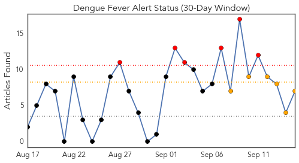
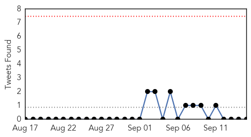
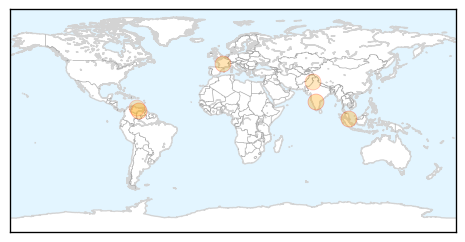
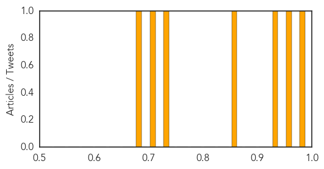

Dengue Fever
30-Day Web Trend
6 alerts, 6 warnings

30-Day Twitter Trend
0 alerts, 0 warnings

Article Locations
Article Confidences
Top Articles:
- 0.992
- Venezuela reports high numbers of dengue, malaria
- 0.968
- Fear of dengue spreads in Raichur district
- 0.945
- Dengue strain's return a worry, Others news, Health News, AsiaOne YourHealth
- 0.867
- Global Crusade Against Dengue Fever
- 0.738
- Iqtidar Gilani
- 0.710
- Odisha: Tata Steel drive to combat dengue
- 0.686
- Mysterious Disease Reportedly Infects Aragua Area; Governor in Denial
Top Tweets:
-
No tweets found for Sep 15, 2014
Cholera
30-Day Web Trend
3 alerts, 0 warnings

30-Day Twitter Trend
0 alerts, 0 warnings

Article Locations

Article Confidences

Top Articles:
- 0.843
- Public latrines,not extensions of homes
- 0.833
- Actionaid Donates To Hospitals To Fight Cholera
- 0.733
- Disease threatens as Kashmir flood waters turn fetid
- 0.707
- Disease threatens as Kashmir flood waters turn fetid
- 0.681
- Disease threatens as Kashmir flood waters turn fetid - India
- 0.676
- Shortage of life-saving drugs hits Kashmir
- 0.556
- Disease threatens as Kashmir flood waters turn fetid
- 0.525
- Quick facts: What you need to know about the South Sudan crisis - South Sudan
Top Tweets:
-
No tweets found for Sep 15, 2014